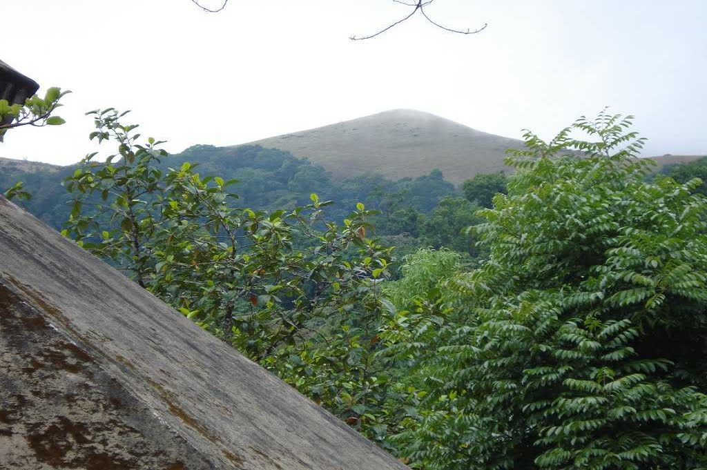
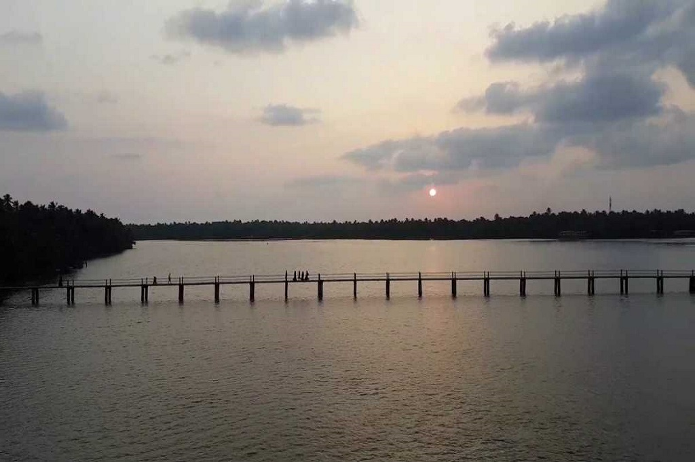
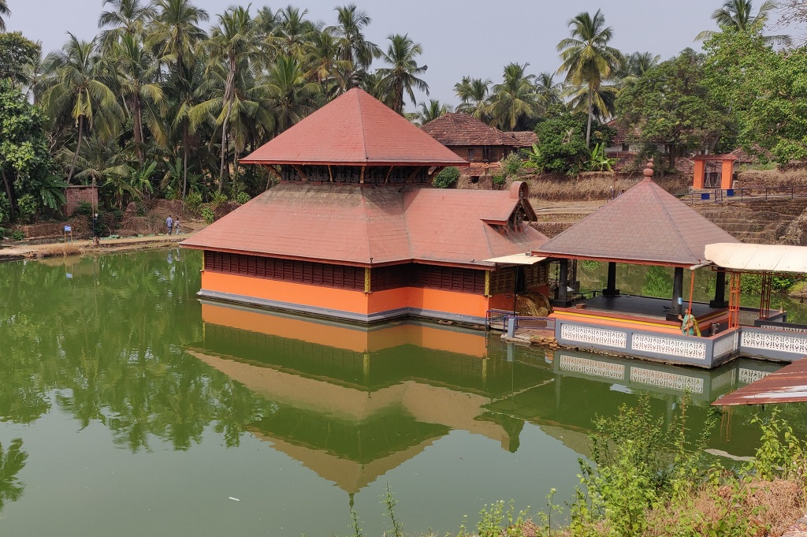
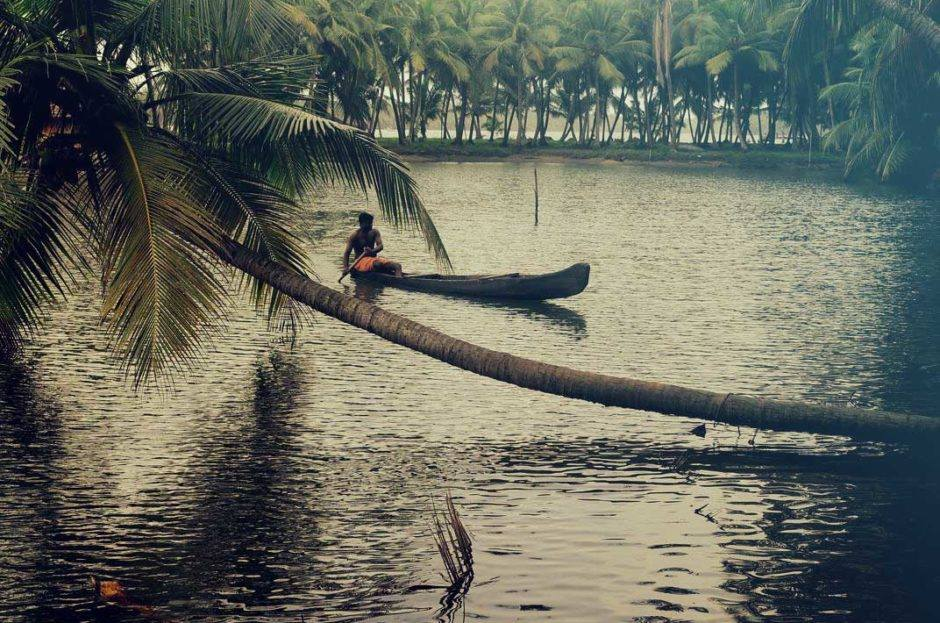

POINTS OF INTEREST

BEKAL FORT
It was an important military station for Tipu Sultan when he led a military expedition to capture Malabar.

RANIPURAM
The whole place is proposed inside the Ranipuram Wildlife Sanctuary which merges with Talakaveri Wildlife Sanctuary of Karnataka.

NILESHWAR
Nileshwar is the cultural capital town of Kasaragod district.It lies between two rivers: Nileshwaram puzha and Thejaswini puzha.

ANANTHAPURA TEMPLE
It's a lovely temple surrounded by a lake. It is heard by the local people that there is a crocodile in this lake which protects the temple.

CHERUVATHUR
Cheruvathur is a popular picnic spot which is famous for poets and scholars of Kuttamath family.